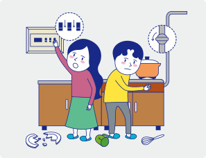
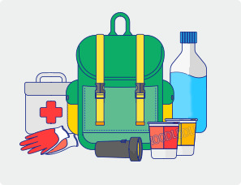
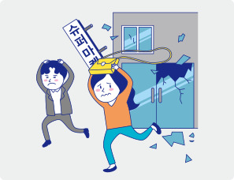
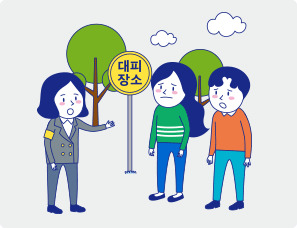
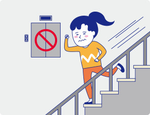
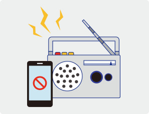

지진
지진
지면이 흔들리는 자연 현상으로, 예고 없이 찾아오기 때문에 많은 피해를 줄 수 있습니다.
지진 피해를 최소화하기 위해서는 지진 발생 시 행동요령을 평소에 익히고, 실제 발생 시 침착하게 대처하는 게 중요합니다.
지진 발생 전 이렇게 대비합니다.


- 집 안에서의 안전을 확보합니다.
- 탁자 아래와 같이 집 안에서 대피할 수 있는 안전한 대피 공간을 미리 파악해 둡니다.
- 유리창이나 넘어지기 쉬운 가구 주변 등 위험한 위치를 확인해 두고 지진 발생 시 가까이 가지 않도록 합니다.
- 깨진 유리 등에 다치지 않도록 두꺼운 실내화를 준비해 둡니다.
- 화재를 일으킬 수 있는 난로나 위험물은 주의하여 관리합니다.
- 집 안에서 떨어지기 쉬운 물건을 고정합니다.
- 가구나 가전제품이 흔들릴 때 넘어지지 않도록 고정해 둡니다.
- 텔레비전, 꽃병 등 떨어질 수 있는 물건은 높은 곳에 두지 않도록 합니다.
- 그릇장 안의 물건들이 쏟아지지 않도록 문을 고정해 둡니다.
- 창문 등의 유리 부분은 필름을 붙여 유리가 파손되지 않도록 합니다.
- 집을 안전하게 관리합니다.
- 가스 및 전기를 미리 점검합니다.
- 건물이나 담장은 수시로 점검하고, 위험한 부분은 안전하게 수리합니다.
- 건물의 균열을 발견하면 전문가에게 문의하여 보수하고 보강합니다.
- 비상용품을 준비하고 보관할 장소를 알아 둡니다.
- 비상시를 대비하여 비상용품을 준비해 두고, 보관할 장소와 사용방법을 알아 둡니다.
- 지진 발생 시 화재가 발생할 수 있으니 소화기를 준비해 두고, 사용방법을 알아 둡니다.
- 평상시 가족회의를 통하여 위급한 상황에 대비합니다.
- 가스, 전기를 차단하는 방법을 알아 둡니다.
- 머물고 있는 곳 주위의 넓은 공간 등 대피할 수 있는 장소를 알아 둡니다.
- 비상시 가족과 만날 곳과 연락할 방법을 정해 둡니다.
- 응급처치하는 방법을 반복적으로 훈련하여 익혀 둡니다.
 비상용품
비상용품
- 1. 비상식품 : 물, 통조림, 라면 등 가열하지 않고 먹을 수 있는 것
- 2. 구급약품 : 연고, 감기약, 소화제, 지병약 등이 포함된 구급함
- 3. 생활용품 : 간단한 옷, 화장지, 물티슈, 라이터, 여성용품, 비닐봉투
- 4. 기타 : 라디오, 손전등 및 건전지, 휴대전화 예비배터리, 비상금, 비상연락망 등
스마트폰 재난정보 애플리케이션
- · 국민안전처 안전디딤돌
- · 기상청 지진 정보 알리미
지진 발생 시 상황에 따라 이렇게 행동합니다.
- 튼튼한 탁자 아래에 들어가 몸을 보호합니다.
- 지진으로 크게 흔들리는 시간은 길어야 1~2분 정도입니다.
- 중심이 낮고 튼튼한 탁자의 아래로 들어가 탁자 다리를 꼭 잡고 몸을 보호합니다.
- 탁자 아래와 같은 피할 곳이 없을 때에는 방석 등으로 머리를 보호합니다.
- 가스와 전깃불을 차단하고 문을 열어 출구를 확보합니다.
- 흔들림이 멈춘 후 당황하지 말고 화재에 대비하여 가스와 전깃불을 끕니다.
- 문이나 창문을 열어 언제든 대피할 수 있도록 출구를 확보합니다.
- 흔들림이 멈추면, 출구를 통해 밖으로 나갑니다.
 지진이 발생했을 때 불이 나면 침착하고 빠르게 불을 꺼야 합니다.
지진이 발생했을 때 불이 나면 침착하고 빠르게 불을 꺼야 합니다.

- 집에서 나갈 때는 발을 보호할 수 있는 신발을 신고 이동합니다.
- 지진이 발생하면 유리 조각이나 떨어져 있는 물체 때문에 발을 다칠 수 있으니, 발을 보호할 수 있는 신발을
신고 이동합니다.
- 계단을 이용하여 밖으로 대피합니다.
- 지진이 나면 엘리베이터를 타지 말고, 계단을 이용하여 건물 밖으로 대피합니다.
- 밖으로 나갈 때에는 떨어지는 유리, 간판, 기와 등을 주의하며, 소지품으로 몸을 보호하면서 침착하게 대피합니다.
- 건물 담장과 떨어져 이동합니다.
- 건물 밖으로 나오면 담장, 유리창 등이 파손되어 다칠 수 있으니, 건물과 담장에서 최대한
멀리 떨어져
가방이나 손으로 머리를 보호하면서 대피합니다.
빌딩이 많은 도심지에서는 깨진 유리창이나 간판 등이 떨어져 다칠 우려가 있으므로, 주변에 가까운 공원이나 넓은 공간이 없다면 최근에 지은 튼튼한 건물 안으로 들어가 우선 몸을 보호합니다.
담장이나 전봇대는 지진으로 기반이 약해져 넘어지기 쉬우므로 절대 기대지 말아야 합니다.

- 넓은 공간으로 대피합니다.
- 떨어지는 물건에 주의하며 신속하게 운동장이나 공원 등 넓은 공간으로 대피합니다.
- 이동할 때에는 차량을 이용하지 않고 걸어서 대피합니다.
- 올바른 정보에 따라 행동합니다.
- 대피 장소에서는 안내에 따라 질서를 지킵니다.
- 지진 발생 직후에는 근거 없는 소문이나 유언비어가 유포될 수 있으니,
라디오나 공공 기관의 안내 방송 등이
제공하는 정보에 따라 행동합니다.
대피 시 주의 사항
- 1. 화재가 발생하면 손수건 등으로 코와 입을 막은 후 연기를 피하여 최대한 자세를 낮추고 안내에 따라 대피합니다.
- 2. 야간에는 넘어지거나 추락할 위험이 있으니, 손전등을 사용하여 조심해서 대피합니다.
- 3. 겨울철에는 추위로 몸 상태가 나빠질 수 있으니, 두꺼운 옷이나 휴대용 난로 등을 준비하여 추위에 대비한 후 대피합니다.
- 4. 지하상가 등의 공간에서는 정전 시 벽에 붙어 이동하고, 가까운 출입구를 통해 밖으로 나갑니다.
- 5. 끊어진 전선을 비롯한 사고의 위험이 있는 물건은 만지지 않도록 주의합니다.
- 6. 대피 중에 휴대전화, 이어폰 등을 사용하면 발을 헛디뎌 부상의 위험이 있으므로 사용을 자제합니다.
- 7. 화장실, 욕실에 있을 때는 거울이나 전구 등의 파손으로 다칠 수 있으니, 욕실에서 나와 안전한 장소로 이동합니다.
- 8. 갇혔을 때는 주변의 딱딱한 물건을 이용하여 소리를 내어 구조를 요청합니다.
지진 발생 시 장소에 따라 이렇게 행동합니다.
- 사무실에 있을 때에는 책상 아래로 피합니다.
- 사무실은 컴퓨터 본체, 모니터 등 무거운 물건들이 많아 다칠 위험이 큽니다.
- 사무실 책상 아래로 들어가 몸을 웅크리고 책상다리를 꼭 잡고 몸을 보호합니다.
- 학교에 있을 때에는 책상 아래로 피합니다.
- 책상 아래로 들어가 몸을 웅크리고 책상다리를 꼭 잡고 몸을 보호합니다.
- 흔들림이 멈추면 선생님의 안내에 따라 질서를 지키면서 운동장으로 대피합니다.
- 복도에서는 창문 유리가 깨질 우려가 있으니 창문과 떨어져 이동합니다.
- 고층 건물에 있을 때에는 실내에서 떨어지는 물건에 주의합니다.
- 높은 층의 건물일수록 흔들림이 크고 오래 지속될 수 있으므로 실내에서 떨어지는 물건에 더욱
주의하여야 합니다.
고층 건물이 저층 건물보다 지진에 더 잘 견디도록 설계되어 있습니다.
지진이 나면 고층건물은 흔들리는 폭은 크지만, 일반적으로 내진설계를 통하여 내진성능을 확보하고 있습니다.

- 백화점이나 마트에 있을 때에는 장바구니로 머리를 보호합니다.
- 진열장에서 떨어지는 물건으로부터 몸을 보호합니다.
- 계단이나 기둥 근처로 피하고, 흔들림이 멈추면 안내에 따라 밖으로 대피합니다.
- 극장이나 경기장에 있을 때에는 우선 자리에서 몸을 보호합니다.
- 흔들림이 멈출 때까지 가방 등 소지품으로 몸을 보호하며 잠시 동안 자리에 머물러 있습니다.
- 사람이 많이 있는 곳에서는 한 곳으로 갑자기 몰리게 되면 사고의 우려가 있으니, 안내에 따라 대피합니다.
- 엘리베이터를 타고 있을 때에는 즉시 내립니다.
- 지진이 발생하면 엘리베이터를 타지 말아야 합니다.
- 엘리베이터를 타고 있다면 모든 층의 버튼을 눌러 가장 먼저 열리는 층에서 신속하게 내린 후, 계단을 이용하여 대피합니다.
- 만약 엘리베이터 안에 갇혔을 때는 인터폰이나 휴대전화를 이용하여 구조를 요청합니다.
- 자동차를 타고 있을 때에는 서서히 차를 멈춥니다.
- 비상등을 켜고 서서히 속도를 줄여 도로 오른쪽에 차를 세우고 긴급차량을 위해 도로의 중앙 부분을 비워 둡니다.
- 라디오의 정보를 잘 듣고, 대피해야 할 때에는 열쇠를 꽂은 채 문을 잠그지 않고 이동합니다.
운전 할 때 지진이 발생하면 흔들림에 의하여 제대로 된 주행이 불가능합니다.
비상등을 켜고 속도를 줄여 주변을 충분히 살피면서 교차로를 피하여 길 오른쪽에 차를 세웁니다.
- 전철을 타고 있을 때에는 손잡이를 꼭 잡습니다.
- 전철 안의 손잡이나 기둥, 선반을 꼭 잡고 넘어지지 않도록 합니다.
- 전철이 멈췄다고 해서 서둘러 출구로 뛰어가는 것은 위험하므로 안내에 따라 행동합니다.
- 산이나 바다에 있을 때에는 안전한 곳으로 대피합니다.
- 산이나 급한 경사지 근처에서는 산사태가 발생할 수 있으니 떨어지는 물체에 주의해서 안전한 곳으로 대피합니다.
- 지진해일 특보가 발령되면 지진해일 긴급대피장소 등 높은 곳으로 대피합니다.
지진 대피 후 이렇게 행동합니다.

- 부상자를 살펴보고 즉시 구조 요청을 합니다.
- 흔들림이 멈춘 후 주변에 부상자가 있으면 이웃과 서로 협력하여 응급처치 하고 119에 신고합니다.
- 주변 피해 상황에 따라 귀가 여부를 결정합니다.
- 지진이 발생하면 통신기기의 사용이 폭주하여 일시적인 장애가 발생할 수 있으니 당황하지 마시고,
라디오 및 주변에 있는 공공 기관이 제공하는 정보에 따라 행동하시기 바랍니다.
- 가정이나 사무실로 돌아간 후에는 안전에 유의하여 주변을 확인합니다.
- 가정이나 사무실의 피해 상황을 확인하고, 안전이 의심된다면 전문가 확인을 받도록 합니다.
- 옷장이나 사무실 보관함 등의 내용물이 쏟아져 내려 부상을 입을 수도 있으므로 문을 열 때 주의합니다.
- 올바른 정보를 항상 확인합니다.
- 여진이 발생할 수 있으므로, 지역방송 등이 제공하는 정보를 확인하고, 대피해야 할 경우에는
지진 국민행동요령에 따릅니다.
가스, 전기, 수도관 등의 피해를 체크합니다.
하나,
가스 냄새가 나거나 소리가 들릴 경우에는 창문을 열고 밸브를 잠근 후 우선 대피합니다.
대피 후에는 가스 관련 기관(지역도시가스회사, LPG공급회사,한국가스안전공사 등)에 확인하고 사용합니다.
둘,
전기에 이상이 발견되었을 때는 원인이 파악될 때까지 엘리베이터를 사용하지 않습니다.
정전이 되었다면 손전등을 사용하고, 차단기를 내린 후 전선의 이상 유무를 확인합니다.
셋,
수도관의 피해가 있다면 밸브를 잠급니다.
하수관의 피해여부를 확인하기 전까지 수도꼭지나 화장실 등 물을 사용하지 말아야 합니다.
넷,
피해가 확인되었다면 살고 있는 곳의 시·군·구청에 신고합니다.


 지진
지진
 태풍
태풍
 호우
호우
 강풍/풍랑
강풍/풍랑
 홍수
홍수
 대설
대설
 산불
산불
 산사태
산사태
 폭염
폭염
 가뭄
가뭄